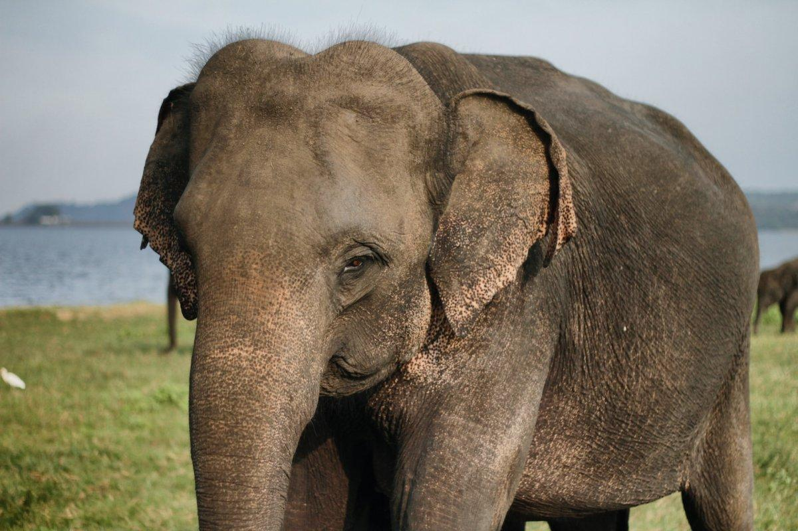
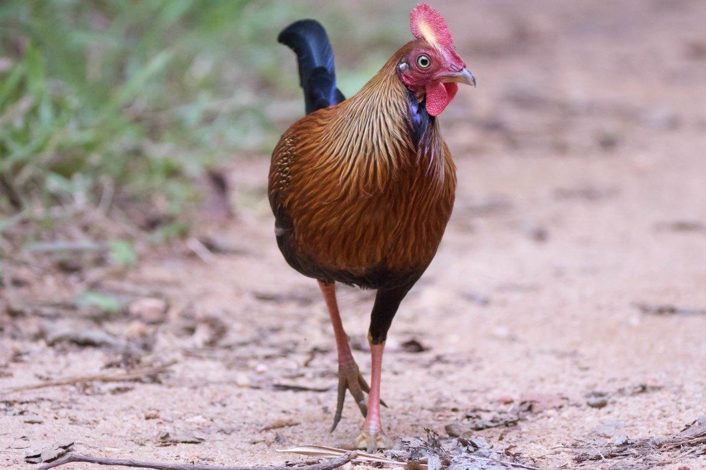

1. Sri Lankan Elephant
The Sri Lankan elephant is one of three subspecies of the Asian elephant, and it is the largest of them all. It is native to the island of Sri Lanka, where it is mostly restricted to the dry zone in the north, east, and southeast of the country. This elephant can be spotted in Lunugamvehera National Park, Wilpattu National Park, Udawalawe National Park, Minneriya National Park, and Yala National Park. Conflicts with humans are on the rise because of urban expansion and permanent cultivation.(kevmrc, 2022)
2. Sri Lankan Junglefowl
The Sri Lankan junglefowl, also known as the Lafayette’s junglefowl or the Ceylon junglefowl, is a species of bird endemic to Sri Lanka. It is the national bird of the country and is closely related to the more famous red junglefowl. This bird inhabits scrub and forest areas, where it is very common. It can easily be sighted at Yala, Sinharaja, and Kitulgala, and lives from sea level up to altitudes of 2,000 m / 6,500 ft.(kevmrc, 2022)
3. Purple Faced Langur

The purple-faced langur, also known as the purple-faced leaf monkey, is a species of Old World monkey endemic to Sri Lanka. It is exclusively arboreal and has a particularly long tail, used for balance. While it used to be abundant in areas around Colombo and in the wet zones of the country, its population has significantly declined because of rapid urban expansion. Locally, this monkey is called the “Sri Lanka black monkey”(kevmrc, 2022)
4. Grizzled Giant Squirrel
The grizzled giant squirrel is a large species of tree squirrel native to Sri Lanka and southern India. It is one of the unofficial national animals of the country, but it is considered near threatened with extinction because of hunting and habitat loss. This squirrel is omnivorous and feeds on multitudes of animal and plant food sources such as bird eggs, nuts, insects, fruits, and even bark. Outside of predator attacks, potential intruders, and mating season, the grizzled giant squirrel never comes to the ground.(kevmrc, 2022)
5. Red Slender Loris

The red slender loris is a small species of primate endemic to Sri Lanka. It is nocturnal and inhabits lowland rainforests, up to 700 m / 2,300 ft in altitude. One of the few remaining red slender loris populations is located in Masmullah Proposed Forest Reserve. Not much is known about this primate, and its numbers are very poorly known. If there are, as suggested, only about 100 of these animals, this species would be one of the top 5 most threatened primates on the planet.(kevmrc, 2022)